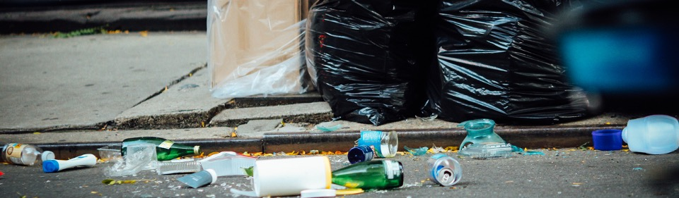

Project Introduction
Introduction
Littering has detrimental effects on both the natural environment, with the breakdown of litter releasing chemicals, and the wildlife that inhabits it. Recent studies have shown that litter is an increasing problem in the U.K. Furthermore, the cost of combating litter is estimated to be about £700 million a year to local authorities. Recent consultations with local authorities have highlighted a demand for the development of a computer vision based system that can process, and identify litter within video footage to allow for better allocation of resources.
Project Overview
In an effort to meet the demands of the local authorities in combating litter, the Green Verge project was constructed. The aim of the project was:
- Collect and constract a dataset of dashcam driving footage.
- Build a dataset of annotated dashcam frames, labelling any objects from the litter class with bounding boxes.
- Train and evaluate a deep learning model to detect litter within the scene.
- Create a pipeline for visualising the route taken by a vehicle and the relative density of litter observed in our detection model.
We report our work on aims one and two here, our work on aim three here, and the final work on aim four here.

Related Works
Below the reader will find a list of works, relate in nature, to the work conducted in this project (listed in no particular order).
- Litter Detection with Deep Learning: Comparative Study (Córdova M et al 2022) [Faster RCNN, Mask-RCNN, EfficientDet, RetinaNet and YOLO-v5]
- Litter Detection via UAV (Kraft et al 2021)
- Marine Litter Detection [Cascade-RCNN] (Moshtaghi, Knaeps, 2021)
- Drones for litter mapping (Andriolo et al 2021)
- Dashcam based wildlife detection (Ferreira et al 2020)
- Localize and Classify Wastes on the Streets via Street Sweeper (Liu et al 2017)
- Street Litter Detection and Classification via Edge Computing (Ping et al 2020)
- AI-based image recognition to track litter in waterways From Hobart, to London, to Dhaka: using cameras and AI to build an automatic litter detection system (theconversation.com)